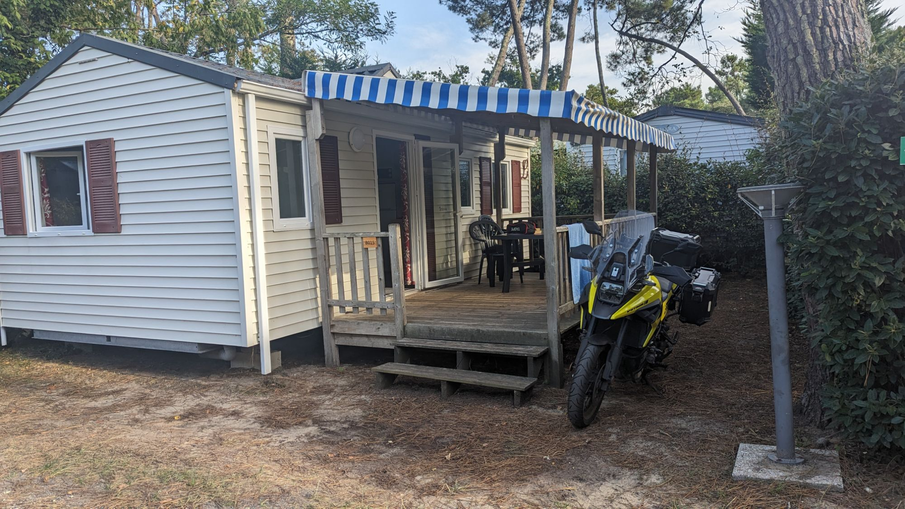

Camping…
These days I almost always go to the west coast of France. When people ask which part I go to I always describe it as “about half way down, on the left coast by Bordeaux”.

The picture below is from when me and Terry went on our first ever camping trip to France, and I think it’s fair to say we didn’t have a clue. I had already experienced Europe with my time spent in Germany with the Army but had never explored France.

This was taken when Me and my cousin Terry went to France, this must have been about 1987.
I had a Suzuki GS550 and Terry had a Suzuki GS250 at the time.
I’ll have to ask Terry to see what he remembers but for me it’s very hazy, I can remember buying alcohol in the supermarket and arguing about where to go, but that’s about it.
In the early days I would pack my tent, a sleeping bag and half of my wardrobe onto my bike, book a ferry, get to France ride southwest for half a day and then find and book into a site when I get there, hoping there would be a pitch available… there always was.
Before leaving I’d say to myself “now don’t pack too much, only take what you can fit into your panniers”. Well that’s nearly impossible, being British and basing the rest of the worlds climate on Britains rather changeable weather conditions I would have to take clothes for every possible weather combination. Heavy waterproofs, big boots and cold weather clothes in case it was cold and raining but also light clothes, ankle boots and thin waterproofs just in-case it got too hot but still rains. Shorts, tee-shirt and swimmers for the campsite but jeans, jumper and waterproof jacket in-case the weather turns… you get the idea. So inevitably I will end up with a large bag strapped to my seat with unused waterproofs strapped to the top of that.

My old GPz1000RX
This picture was taken somewhere around 1988/89. This was when Vince, his brother and myself went on a grand tour around France, that was one fantastic trip, we went down the west coast to Biarritz, then followed the Pyrenees mountains to the south coast, visited St Tropez to ogle the topless ladies, then popped into Italy and Switzerland before stopping for a few nights in the Black Forest region of Germany and then back to Calais via Luxembourg, Netherland’s and Belgium.

The route was something like this, I’ve forgotten certain details like, which ferry ports we used and what cities we visited.
The photo below is one from when Sharon and me used to go on the bike, we would usually go to the Royan area, there were a lot more campsites back then, most have now become the large static sites that I now love to visit.
We would take my little two man tent, a couple of sleeping bags, very limited cash and some counter cheques. We used to have a great time, visiting all the local attractions, beaches, bars and cafes.

One thing that can be said about the French is that they know how to do campsites, every one I’ve ever been to has been well looked after, spotless toilet and wash blocks and usually right on the edge of the town or village. Most have crazy golf and all have a boules pitch or two.

France Sept 2023
I just wanted to share with you an overview from one of my trips to France, this one was done on my Honda XL750 Transalp. It was an amazing adventure and I had a lot of fun along the way.
I started my journey by travelling to the South Coast and then taking the Brittany Ferry from Portsmouth to Caen, thankfully it was a smooth and relaxing crossing(I’ve discovered sea sickness as I’ve got older). It was a beautiful clear day and I had great views of the English Channel and then the French coast.
I arrived in Caen in the late afternoon and headed straight to my overnight hotel, which was as you would expect from a £30 a night Formule 1 Hotel, cheap and cheerful with the strange toilet in the corner of the room that you have to stand on tip toes to reach, it has a hot and cold tap…weird.
The next day, after a relaxed breakfast I hit the road with just one goal in mind, to get to the campsite, and rode south to Les Mathes, which is a beautiful seaside resort on the Atlantic coast. I generally take a somewhat scenic and enjoyable ride, with some twisty roads and stunning views, avoiding the motorways where I can. I passed through several towns along the way, such as Le Mans, Angers, and Nantes.
I arrived in Les Mathes in the evening and checked into my caravan, which as you should expect was modern and comfortable with everything you need to survive for a week or two provided.
I spent the next 10 days relaxing on the patio or walking in the sun. I
went swimming in the onsite pool, chilled on a sun lounger and ultimately walked for miles and miles through the coastal forest. All topped off by a pint or two of lager and a quiz in French back at the campsite bar, the back to the caravan for some food and a read of one of my books for a couple of hours before bed.
On the last day of my trip, I drove back to the F1 Hotel at Saint-Lo for the final night. Taking a slightly different route this time, which gave me a chance to see some new places and things. I stopped at a couple more places along the way, such as Rennes, Mont Saint-Michel, and Bayeux.
Up early the next morning for the hour or so trip to the ferry port at Ouistreham(Caen) for the 8am crossing back to Portsmouth. I arrived in Portsmouth early afternoon and drove back home.
I hope you enjoyed reading about my trip to France on my Honda motorbike. It was one of the best trips of my life and I highly recommend it to anyone who loves travelling and biking.
France 2017
The last camping site I stayed at in a tent though was a bit of a let down but only because of where they pitched me, the rest of the site was great, I was right next to the motorhome waste water point, listening to someone emptying out their portable toilet when you are trying to eat breakfast is not the most pleasant experience, and the smell…
Anyway I posted a negative Google review which the site owners saw an offered me 3 nights free if I took it down, of course I agreed, haha, the review is still up and I had my free nights.
But anyway I decided I am getting too old and so that that was it, I made the decision that year that crawling around in a tiny two man tent was no longer how I wanted to holiday so I decided to ditch the tent and go up market.
So nowadays I pre-book a static caravan and holiday in 4 or 5* luxury holiday parks where there are swimming pools, bars, restaurants, entertainment etc. well I am getting older and I deserve it.
I try to go twice a year during the cheap periods, June and September, the weather, although a little unpredictable is generally absolutely fine

Spain Sept 2024
This is a new one for me(and Liam), we went to a new region right down the bottom of South West France near Biarritz. This one was Liams idea and he asked me if I wanted to tag along with him…is the Pope Catholic?… we booked onto the Portsmouth to Santander ferry and will ride up through France to Caen after staying 6 nights on a caravan park near Messanges first.
We’d been there three days and the weather hadn’t been too kind, on and off rain with an overcast sky and quite cold with it(for this time of year in this part of the world), until finally, day four it hit 25C and the same overnight weirdly but then back to 18C in the morning so I took advantage of it, left Liam to his own devices and went and sat by the pool for a couple of hours.
The pool complex is the biggest I’ve ever come across, 6 pools, various slides and a surf wave thing. It’s got a bar and cafe, message and sauna rooms, it has it all.
Biggest issue with the site. The prices of everything. Of course all the facilities are free but 8€ for a pint of lager… There is a Spar shop too but hideously expensive and most of the shelves are empty, there’s a Casino supermarket within easy walking distance though so no problems with shopping for my salad.